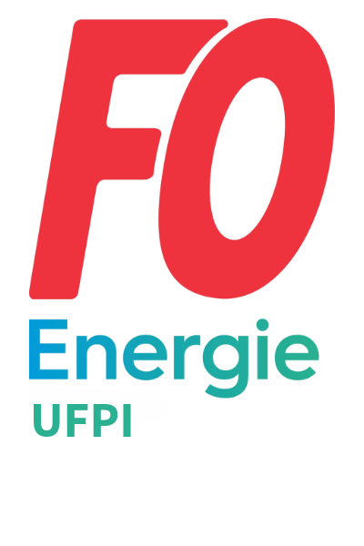
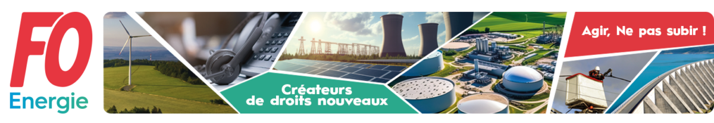

FO Énergie UFPI
Salaire, conditions de travail, droits, protection… Découvrez comment FO Énergie UFPI agit concrètement pour vous dans votre vie professionnelle.
Découvrir nos actionsConcrètement
Que vous soyez adhérent ou non, les représentants FO agissent au quotidien pour améliorer vos conditions de travail et défendre vos droits.
Chaque année, FO négocie lors des NAO (Négociations Annuelles Obligatoires) pour obtenir des augmentations de salaire et des primes. Les accords signés s'appliquent à tous les salariés.
Vous faites face à une sanction injuste, un licenciement ou un conflit avec votre hiérarchie ? Un représentant FO peut vous accompagner et vous assister lors des entretiens avec l'employeur.
Télétravail, horaires, charge de travail, sécurité… FO siège dans les instances et impose des discussions sur vos conditions de travail. Vos remontées de terrain font bouger les choses.
Nouvelles lois, accords signés, résultats des négociations… FO vous tient informé via des communiqués réguliers. Vous savez ce qui se passe et ce qui a été obtenu pour vous.
Vos préoccupations remontent jusqu'aux instances paritaires et aux directions. FO s'assure que vos intérêts sont représentés lors des grandes décisions : restructurations, plans de formation, politique RH.
Question sur vos droits, votre contrat, une clause qui vous semble floue ? Les représentants FO répondent à vos questions et vous orientent. Un accompagnement personnalisé, confidentiel et sans engagement.
Vos interlocuteurs
Plusieurs types de représentants agissent pour vous selon leurs attributions. Voici comment les identifier et ce que vous pouvez attendre de chacun.
Les élus CSE sont vos représentants élus par les salariés. Ils siègent dans l'instance principale et ont un droit de regard sur les décisions économiques, sociales et les conditions de travail de l'entreprise. Ils peuvent exercer un droit d'alerte en cas de danger grave.
Le délégué syndical est désigné par FO pour négocier les accords collectifs avec la direction. Il signe (ou refuse de signer) les accords au nom du syndicat. C'est lui qui porte les revendications lors des NAO et des négociations thématiques.
Les membres de la CSSCT traitent spécifiquement des risques professionnels, accidents du travail et maladies professionnelles. Ils inspectent les lieux de travail, enquêtent sur les incidents et proposent des améliorations concrètes.
Le RSS est le relais local de FO dans l'entreprise. Il diffuse l'information syndicale, organise des réunions et fait le lien entre les adhérents et les représentants. C'est souvent lui que vous rencontrerez en premier.
Notre équipe
Cliquez sur un membre du bureau pour découvrir sa présentation et ses coordonnées directes.
Secrétaire Général
Secrétaire Général Adjoint
Trésorier
Secrétaire
Vos questions
Voici les questions que se posent souvent les agents qui envisagent de nous rejoindre.
Adhérer à FO, c'est simplement rejoindre un syndicat indépendant qui défend vos intérêts. Vous n'avez aucune obligation de participer à des actions ou de militer. Vous bénéficiez d'un accompagnement, d'informations et d'un soutien en cas de besoin — c'est tout.
Non. L'appartenance syndicale est une information strictement confidentielle, protégée par la loi. Votre employeur n'a pas le droit de chercher à connaître votre appartenance syndicale, ni de vous discriminer pour ce motif. La discrimination syndicale est un délit.
Oui. Les accords collectifs négociés par FO s'appliquent à tous les salariés, syndiqués ou non. C'est le principe même de la représentation collective. En revanche, pour un accompagnement individuel (assistance lors d'un entretien, conseil personnalisé), adhérer à FO vous garantit un soutien plus direct et prioritaire.
La cotisation syndicale représente environ 1% de votre salaire mensuel net. Elle est déductible des impôts à 66%, ce qui réduit considérablement son coût réel. Pour en connaître le montant exact pour votre situation, contactez directement votre section syndicale FO.
FO se distingue par son indépendance totale vis-à-vis des partis politiques et du patronat. FO Énergie UFPI est spécialisée dans votre secteur : ses représentants connaissent vos métiers, vos conventions collectives et les enjeux propres aux industries de l'énergie. Ce n'est pas un syndicat généraliste.
Prochaine étape
Prenez contact avec votre section syndicale locale. Un représentant vous répondra, sans engagement, pour vous expliquer comment FO peut vous accompagner dans votre situation.

"Un syndicat fort, c'est la garantie que votre voix compte dans l'entreprise."
— Agir, ne pas subir !